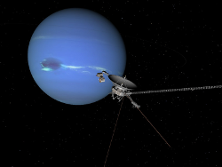
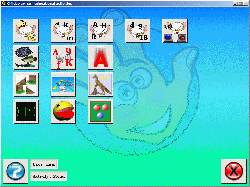
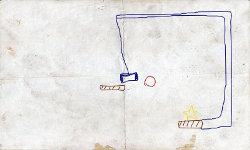
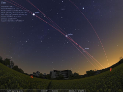
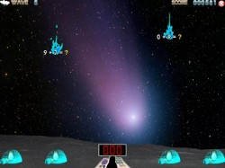
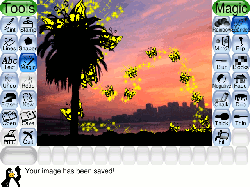
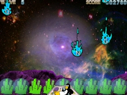

Guadalinex v6 - Software Libre
| Programa: | Celestia 1.6.0 |
|---|---|
| Web: | http://www.shatters.net/celestia/ |
| Instalador: | Instalar |
|  | Celestia es un software planetario, que nos posibilita explorar el Universo en tres dimensiones, simular viajes a través de nuestro sistema solar, viajar a más de 100.000 estrellas de la Vía Láctea o incluso fuera de nuestra galaxia. Celestia incluye un catálogo de estrellas, de galaxias, de planetas, de lunas, de asteroides, de cometas, y naves espaciales. Si este no es bastante, puedes descargar (e incluso disenar) gran cantidad de nuevos objetos, reales o imaginarios, y agregarlos fácilmente. |
| Programa: | Childsplay |
|---|---|
| Web: | http://www.schoolsplay.org/ |
| Instalador: | Instalar |
|  | Colección de juegos educativos para niños y niñas a partir de 3 años. |
| Programa: | Numpty Physics 0.2 |
|---|---|
| Web: | http://numptyphysics.garage.maemo.org/ |
| Instalador: | Instalar |
|  | Numpty Physics es un juego aparentemente muy simple: hay que llevar la pelota roja a la estrella amarilla. Sin embargo, es algo mucho más entretenido de lo que parece. Basándose en el Crayon Physics, tenemos que dibujar un entorno a base de rampas, palancas, muelles para lograr nuestro objetivo. |
| Programa: | Stellarium 0.10.5 |
|---|---|
| Web: | http://www.stellarium.org/es/ |
| Instalador: | Instalar |
|  | Stellarium es capaz de mostrar un cielo realista en 3D, tal como se aprecia a simple vista, con binoculares o telescopio. Actualmente se ha implementado en domos planetarios. |
| Programa: | TuxMath |
|---|---|
| Web: | http://tux4kids.alioth.debian.org/tuxmath/ |
| Instalador: | Instalar |
|  | Con este programa podrá jugar y desarrollar tanto sus habilidades matemáticas como las de los más pequeños de la casa. |
| Programa: | TuxPaint |
|---|---|
| Web: | http://www.tuxpaint.org/?lang=es |
| Instalador: | Instalar |
|  | TuxPaint es una herramienta pensada para que los máas pequeños puedan dibujar lo que quieran en el ordenador. |
| Programa: | TuxType |
|---|---|
| Web: | http://tux4kids.alioth.debian.org/tuxtype/index.php |
| Instalador: | Instalar |
|  | Gane agilidad tecleando con este juego educativo. |